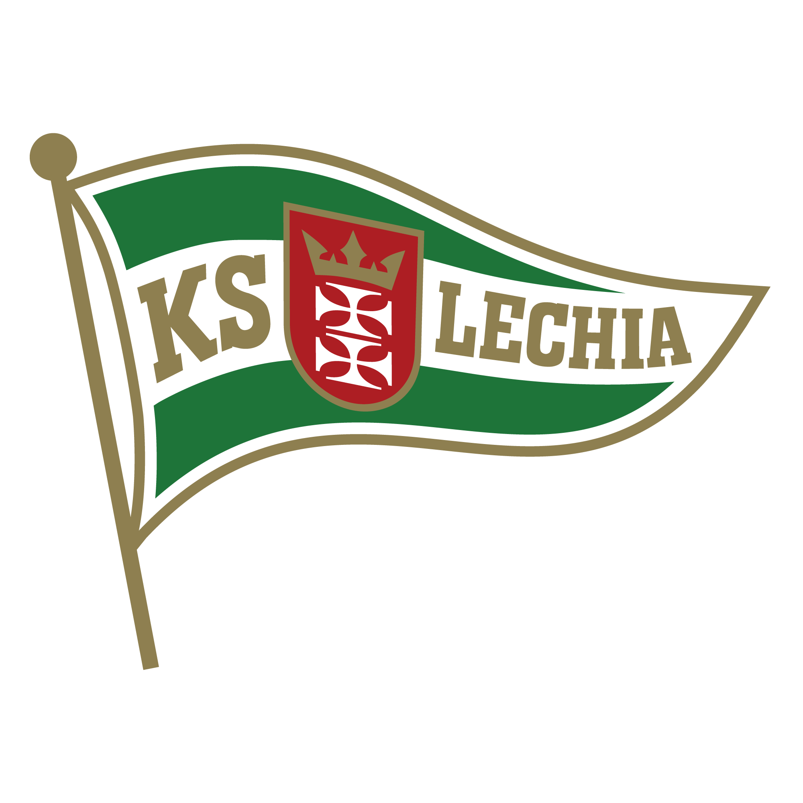
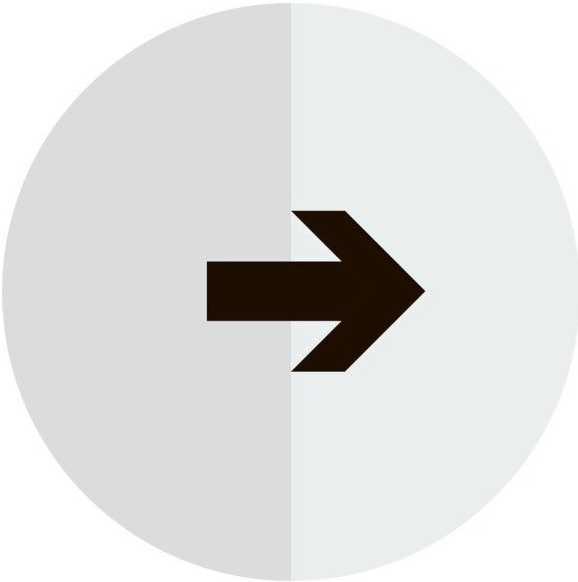
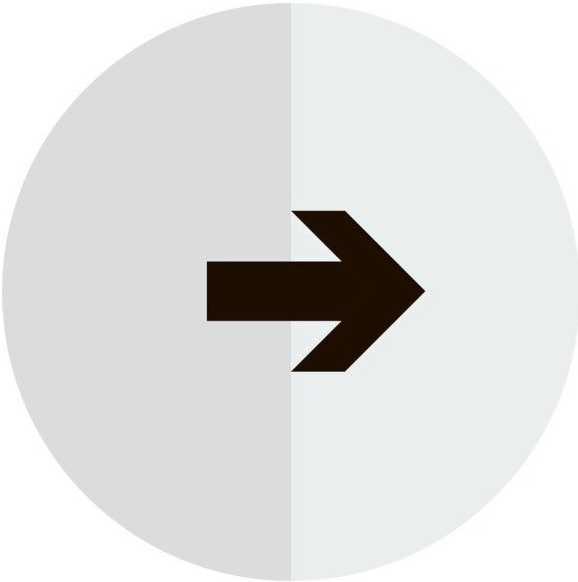

Lechia Gdańsk

Raków Częstochowa
Moją kolejną pasją jest piłka nożna, lecz nie granie w nią, a oglądanie jej i kibicowanie swoim ulubionym drużynom.
Zejdź na sam dół
Ekstraklasa to najwyższa liga rozgrywkowa w Polsce. Mistrz Polski uzyskuje prawo udziału w eliminacjach do Ligi Mistrzów UEFA, zaś wicemistrz i zdobywca trzeciego miejsca w eliminacjach do Ligi Konferencji Europy UEFA. W obecnym formacie rozgrywki składają się z trzydziestu czterech kolejek spotkań rozgrywanych pomiędzy drużynami systemem kołowym. Każda para drużyn rozgrywa ze sobą dwa mecze – jeden w roli gospodarza, drugi jako goście. Od sezonu 2021/22 w lidze występuje 18 zespołów. W przeszłości liczba ta wynosiła od 10 do 16. Drużyna zwycięska za wygrany mecz otrzymuje 3 punkty (do sezonu 1994/95 2 punkty), 1 za remis oraz 0 za porażkę. Obecny mistrz Polski to Lech Poznań, a drużyną której osobiście kibicuję jest Lechia Gdańsk.
| Zwycięzcy Ekstraklasy | ||
|---|---|---|
| Klub | Sezon | Trener |
| Lech Poznań | 21/22 | Maciej Skorża |
| Legia Warszawa | 20/21 | Czesław Michniewicz |
| Legia Warszawa | 19/20 | Aleksandar Vukovic |
| Piast Gliwice | 18/19 | Waldemar Fornalik |
| Legia Warszawa | 17/18 | Dean Klafuric |

Są to międzynarodowe, europejskie, klubowe rozgrywki piłkarskie, utworzone z inicjatywy UEFA w 1992, jako kontynuacja Pucharu Europy Mistrzów Krajowych i regularnie prowadzone przez tę organizację od sezonu 1992/1993 w ramach europejskich pucharów. Przeznaczone dla najlepszych męskich drużyn klubowych (zajmujących czołowe miejsca w europejskich ligach krajowych) oraz rozgrywane na europejskich stadionach. Są to najbardziej prestiżowe klubowe rozgrywki piłkarskie w Europie. Tym samym oglądając te rozgrywki gwarantowany jest najwyższy poziom gry, co niezwykle cieszy oko każdego piłkarskiego kibica, który z niecierpliwością wyczekuje kolejnych edycji tego turnieju.
Nie każdy musi być fanem piłki nożnej. Jednak kiedy reprezentacja Polski rozgrywa swoje mecze, praktycznie cały kraj zasiada przed telewizorami i kibicuje naszym. To ukazuje jak popularnym sportem w Polsce jest piłka nożna i ile dla nas ona znaczy. Już za niecały miesiąc rozpoczynają się Mistrzostwa Świata w Katarze, gdzie nasi piłkarze będą walczyli o wyjście z grupy i dobre wyniki. Mundial to piłkarskie święto i cały świat skupiony jest na śledzeniu owych rozgrywek.
 
